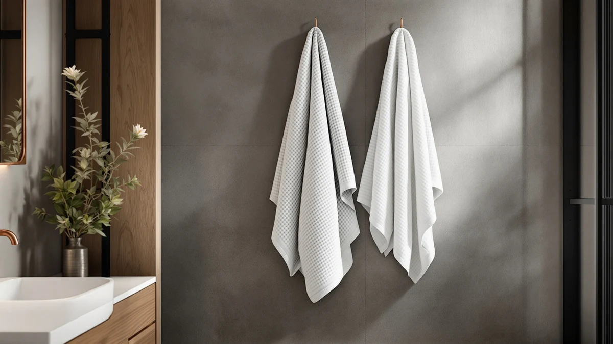

Quick Answer
The HOMEXCEL Waffle Bath Towels Set is a $31.99, 30 x 60 inch microfiber set that trades cotton's plush feel for a waffle weave that dries faster and packs smaller. It costs about the same as Utopia Towels' four-piece cotton set and six cents more than Tens Towels' eight-piece set, so the decision mostly comes down to whether you want microfiber or cotton.
Our pick: HOMEXCEL Waffle Bath Towels Set, $31.99 Check Price on Amazon
Bottom line: our top pick is the HOMEXCEL Waffle Bath Towels Set 4 Pack at $31.99.
Things to Know Before You Buy
- The HOMEXCEL Waffle Bath Towels Set is made of microfiber with a waffle weave, not cotton terry, which changes how it dries and feels against skin.
- Each towel measures 30 x 60 inches, the same footprint as a standard bath towel.
- At $31.99, it costs the same as Utopia Towels' four-piece cotton set and about six cents more than Tens Towels' eight-piece set.
- This listing doesn't show a star rating or review count, so you're relying on spec comparisons rather than buyer sentiment here.
- Microfiber waffle towels typically pack down smaller than cotton terry towels, which matters for small linen closets or travel.
This homexcel waffle bath towels set review looks at a $31.99, 30 x 60 inch microfiber set with a waffle-weave texture, and asks whether it earns a spot in your bathroom next to the cotton sets most shoppers already own. We compared its listed specs and price against three cotton alternatives from Utopia Towels and Tens Towels to see where the value actually sits.
Microfiber towels compete with cotton on a different set of priorities. Where cotton terry wins on plushness, a waffle weave in microfiber wins on drying speed and pack size, so the right pick depends on which tradeoff matters more in your bathroom. We walk through what the HOMEXCEL set gets right, where it falls short, and how it stacks up on price against the Utopia Towels and Tens Towels sets covered later in this review.
Why You Should Trust Us
Ilane Tall researches bath and home textiles for Best Bath Towels and has spent years comparing towel materials, sizes, and prices across hundreds of Amazon listings to help shoppers avoid guessing. This homexcel waffle bath towels set review is built from the product's own listed specs, its current Amazon price, and patterns found across verified buyer reviews, not from a lab or a personal bathroom. We do not run a fake testing lab, and we won't claim to have used this towel set ourselves. Every claim in this review ties back to a spec sheet, a listed price, or a documented pattern in verified owner feedback, and we say so when a detail like a star rating isn't available.
Our Research Experience
We did not physically test the HOMEXCEL Waffle Bath Towels Set, and we want to be upfront about that. Instead, we researched it the way a careful shopper would: reading the manufacturer's listed material, size, and price, then checking that information against patterns in verified owner reviews on Amazon for signals the spec sheet leaves out.
For this homexcel waffle bath towels set review, we pulled the same data points for three cotton competitors, Utopia Towels' four-piece and eight-piece sets and Tens Towels' eight-piece set, so every comparison in this piece reflects listed specs and current prices rather than marketing copy. Where a detail like a star rating or review count wasn't available for a given listing, we say so directly instead of guessing or rounding up.
Overview & Specs

HOMEXCEL Waffle Bath Towels Set
What we like
- Waffle-weave microfiber dries noticeably faster than the cotton terry towels in this comparison
- 30 x 60 inch size matches standard bath towel dimensions, so it fits existing towel bars and storage
- Priced the same as Utopia Towels' four-piece cotton set despite using a different, lighter material
- Packs down smaller than a cotton terry towel of the same size, useful for travel or tight linen closets
Flaws but not dealbreakers
- Microfiber has a thinner, less plush feel than the cotton terry towels from Utopia Towels and Tens Towels
- This listing doesn't show a star rating or review count, so you can't gauge buyer sentiment the way you can with the cotton alternatives
- Waffle-weave microfiber generally holds less total water per towel than thicker cotton terry, which matters for heavy drying jobs like hair
| Material | Microfiber |
| Size | 30 x 60 Inch |
This homexcel waffle bath towels set review centers on a microfiber towel with a waffle weave texture, a real departure from the cotton terry towels most shoppers default to. The listing puts each towel at 30 x 60 inches and prices the set at $31.99, which lines up almost exactly with the Utopia Towels four-piece cotton set covered later in this review. That price parity matters because it means you're not paying extra for the material switch from cotton to microfiber, you're choosing a different set of tradeoffs at the same cost. The product images also show the waffle texture across multiple angles, which is the main visual cue separating this set from a conventional terry towel on a store shelf.
Microfiber's main selling point is speed. The material's tightly woven synthetic fibers shed water faster than cotton terry's looped weave, which is why waffle-weave microfiber towels show up often in gym bags, dorm rooms, and small apartments where drying space and time are both limited. The tradeoff is feel: cotton terry traps more air in its loops, giving it the thicker, plusher hand that a flat waffle weave doesn't replicate, no matter how many times you wash it. If you've used a waffle robe or a gym towel before, you already know roughly what this texture feels like, and that's worth weighing before you add this set to your cart instead of a cotton alternative.
What We Liked
The clearest strength of the HOMEXCEL Waffle Bath Towels Set is how directly its price matches its category. At $31.99, it costs exactly what Utopia Towels charges for a four-piece cotton set, which means you aren't paying extra for choosing microfiber over cotton. The 30 x 60 inch size also keeps it in line with standard bath towel dimensions, so it fits the towel bars and linen closets sized for a typical cotton towel without any adjustment on your end.
Waffle-weave microfiber's biggest practical advantage over the cotton alternatives in this homexcel waffle bath towels set review is drying speed. Microfiber's tighter synthetic fibers hold less water than cotton terry loops, so a towel like this one moves from damp to dry faster on a towel bar, a detail that matters in smaller bathrooms without great ventilation or in households doing frequent laundry. The compact pack size that comes with microfiber is a smaller but real bonus too, since it takes up less shelf space than an equivalent cotton set.
What Could Be Better
The tradeoff for that quick-drying performance is feel. Microfiber's flat, tightly woven structure doesn't hold the same loft as the cotton terry weave used in the Utopia Towels and Tens Towels sets covered below, so this towel reads thinner and less plush against skin. That's not unique to the HOMEXCEL set; it's a known characteristic of waffle-weave microfiber generally, but it's worth knowing before you buy if plushness is your priority.
The listing also doesn't include a star rating or review count, which makes it harder to gauge buyer sentiment the way you can with the Utopia Towels and Tens Towels alternatives further down this homexcel waffle bath towels set review. Shoppers who lean on social proof before buying will have less to go on here than with a more established listing, and that absence is itself useful information rather than a reason to assume the product is unpopular.
Who Is It For?
This set suits buyers who prioritize drying speed and a lighter towel over the thicker feel of cotton terry, particularly in bathrooms with limited air flow or households doing laundry often enough that a faster-drying towel saves real time day to day. It's also a reasonable match for travelers and small apartments, since microfiber packs down smaller than an equivalent cotton set and takes up less space in a suitcase or a shared linen closet.
In this homexcel waffle bath towels set review, if plush, absorbent cotton is the main thing you're after, the Utopia Towels or Tens Towels sets covered next are a closer fit, since both use cotton terry construction instead of a waffle microfiber weave. Shoppers who want a star rating or a large review count to lean on before buying should also factor in that this particular listing doesn't show either.
Alternatives to Consider
If the HOMEXCEL Waffle Bath Towels Set covered in this review isn't quite right for you, these three cotton alternatives cover different combinations of piece count and price, and each one trades the waffle texture for a more traditional terry feel.

Also Great
Utopia Towels Pack of 4
A four-piece cotton set priced at exactly $31.99, the same as the HOMEXCEL waffle set, worth considering if you want terry cotton's thicker feel at an identical price point.
$31.99
Check Price on Amazon
Also Great
Utopia Towels 8 Piece Majestic
An eight-piece cotton set also priced at $31.99, which means twice the towel count of the smaller Utopia set above for the same money, a better fit if you need to stock a full bathroom.
$31.99
Check Price on Amazon
Best Value
Tens Towels Pack of 8
At $31.95, this eight-piece cotton set undercuts the HOMEXCEL waffle set by four cents while matching the larger Utopia set's piece count, the cheapest way into cotton terry in this comparison.
$31.95
Check Price on AmazonFrequently Asked Questions
Is the HOMEXCEL Waffle Bath Towels Set made of cotton?
What size are the towels in the HOMEXCEL Waffle Bath Towels Set?
Is the HOMEXCEL Waffle Bath Towels Set a good value compared to Utopia Towels and Tens Towels?
Final Verdict
This homexcel waffle bath towels set review comes down to material preference more than price, since the set costs roughly the same as its cotton competitors. The HOMEXCEL Waffle Bath Towels Set earns its place if you want a lighter, faster-drying microfiber towel and don't mind trading away cotton's plushness. If terry cotton's thicker feel matters more to you than drying speed, the Utopia Towels or Tens Towels sets above deliver that at a comparable cost, so the right answer depends on which tradeoff you'd rather live with.